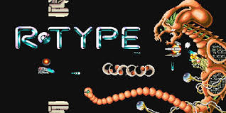

To start the client application, use the following command:
./r-type_client (name of client)
The R-Type client is a networked game client that connects to the R-Type server for multiplayer gameplay. It handles user input, renders the game graphics, and communicates with the server to synchronize game state.
The client uses UDP for communication with the server. Two main types of packets are exchanged:
[0] : Type (0x01)
[1-2] : ID (2 bytes)
[3-4] : Position X (12 bits)
[4-5] : Position Y (12 bits)
[6] : Direction
[7] : Speed
[0] : Type (0x02)
[1-2] : ID (2 bytes)
[3-17] : Pseudo (up to 15 characters)
Handles all network communications, including sending player actions and receiving game state updates.
Captures and processes user inputs (keyboard/mouse) for game control.
Responsible for drawing the game graphics, including player ships, enemies, and game environment.
Manages local game state and integrates server updates.
The client can be configured using a configuration file or command-line arguments. Key configurable parameters include:
If you encounter issues with the client:
For developers looking to extend or modify the client:
The client code is organized into several key files and directories:
#include "game.hpp" #include#include #include "../Protocol/Protocol.hpp" #include "Utils/HealthBar.hpp" Game::Game(sf::RenderWindow &window, ECS &ecs) : backgroundOffset(0.0f), ecs(ecs) { if (!font.loadFromFile("src/client/assets/nasa.otf")) throw std::runtime_error("Failed to load font"); if (!backgroundTexture.loadFromFile("src/client/assets/bcg.png")) throw std::runtime_error("Failed to load background image"); backgroundSprite.setTexture(backgroundTexture); gameText.setFont(font); gameText.setString("Game Page"); gameText.setCharacterSize(30); gameText.setFillColor(sf::Color::White); gameText.setPosition(100, 50); backButton.setFont(font); backButton.setString("Back"); backButton.setCharacterSize(30); backButton.setFillColor(sf::Color::White); backButton.setPosition(50, 500); }
void Menu::handleEvents(UdpClient &client) {
sf::Event event;
while (_window.pollEvent(event)) {
if (event.type == sf::Event::Closed)
_window.close();
if (event.type == sf::Event::KeyPressed) {
if (event.key.code == sf::Keyboard::Space) {
Protocol protocol;
std::vector fields;
std::cout << "Escape key pressed" << std::endl;
protocol.resizeBuffer(8);
fields.push_back({9, 8});
fields.push_back({(uint16_t)_ecs.getClientId(), 16});
protocol.setBuffer(protocol.createPacket(fields));
protocol.runRequest(_ecs);
fields = {};
for (auto &b : protocol.getBuffer())
fields.push_back({b, 8});
client.addRequest(fields);
}
if (event.key.code == sf::Keyboard::Escape)
_window.close();
}
if (event.type == sf::Event::MouseButtonPressed) {
auto mousePos = sf::Mouse::getPosition(_window);
if (gameButton.getGlobalBounds().contains(static_cast(mousePos)))
_game.run(_window, client);
if (settingsButton.getGlobalBounds().contains(static_cast(mousePos)))
_setting.run(_window);
if (StoryButton.getGlobalBounds().contains(static_cast(mousePos)))
_story.run(_window);
}
}
}
void Game::render(sf::RenderWindow& window) {
window.clear();
window.draw(backgroundSprite);
window.draw(gameText);
window.draw(backButton);
window.display();
}